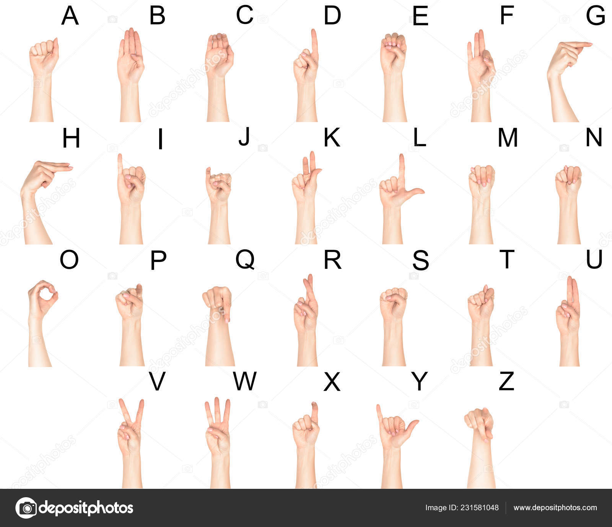

<style>
    #sign-gestures {
     
     
      padding: 20px;
      background-color: #e1e0e0;
      border: 1px solid #000000;
      box-shadow: 0 0 10px rgba(0, 0, 0, 0.1);
    }
  
    #sign-gestures h2 {
      margin-top: 0;
    }
  
    #sign-gestures ul {
      list-style: none;
      padding: 0;
      margin: 0;
    }
  
    #sign-gestures li {
      margin-bottom: 20px;
    }
  
    #sign-gestures img {
  width: 350px;
  height: 450px;
  margin: 10px;
  border: 1px solid #ccc;
  display: block;
  margin: 20px auto;
}
  
    #sign-gestures p {
      margin-bottom: 10px;
    }
  
    #sign-gestures iframe {
      width: 100%;
      height: 240px;
      margin: 10px;
      border: none;
    }
  </style>
  <nav>
    <ul>
        <li><a href="index.html" style="text-decoration: none;"><span style="font-size: 30px;">&#8592;</span></a>
            </li>
    </ul>
</nav>
  <section id="sign-gestures">
    <center><h1>Common Sign Gestures</h1></center>
    <ul>
      <li>
        
      </li>
      <p><b><h2>For more information watch below video.</h2></b></p>
      <li>
        <h3><p>Hello: Hold your dominant hand up with your palm facing outwards and your fingers together.</p></h3>
        <iframe width="220" height="340" src="https://www.youtube.com/embed/3yYjYvdcCw8" frameborder="0" allowfullscreen></iframe>
      </li>
    </ul>
  </section>
  
  